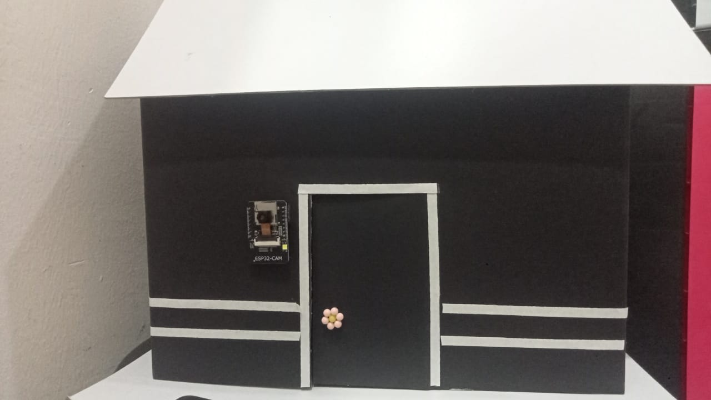
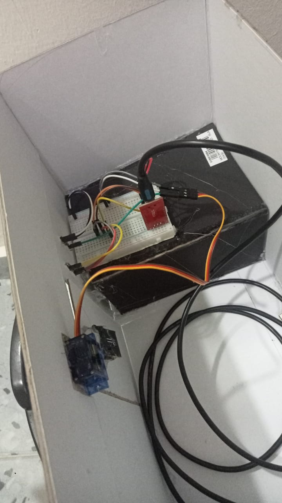
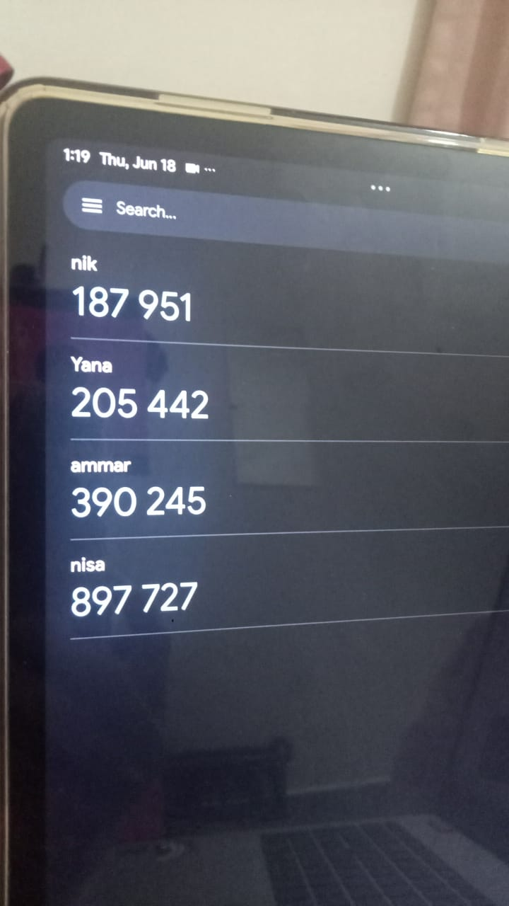
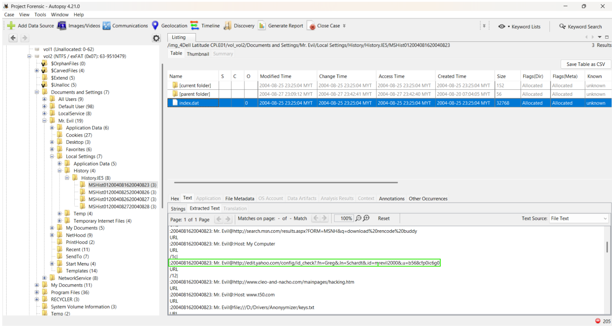
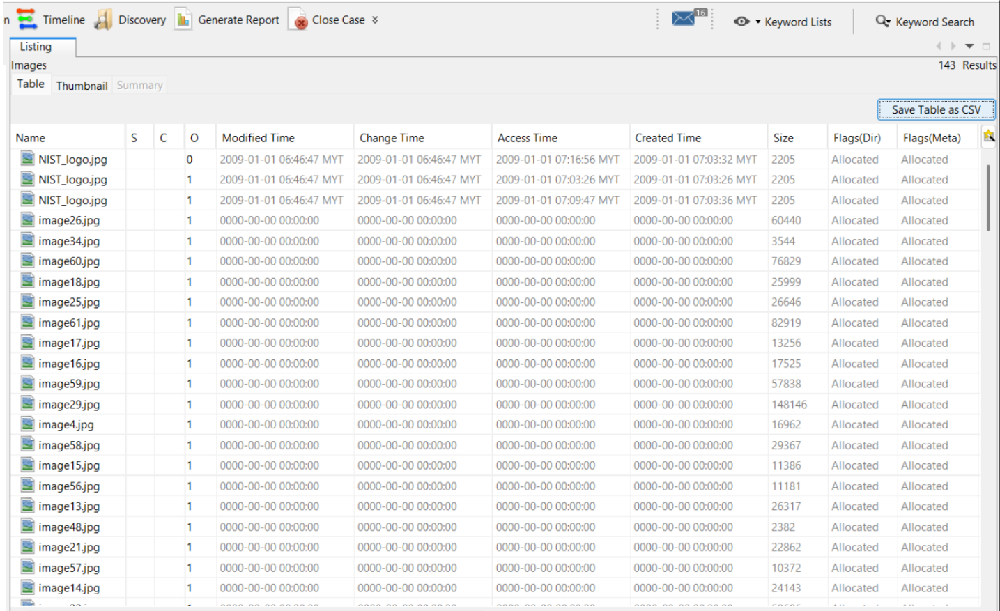
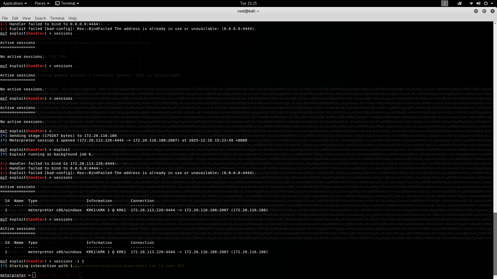
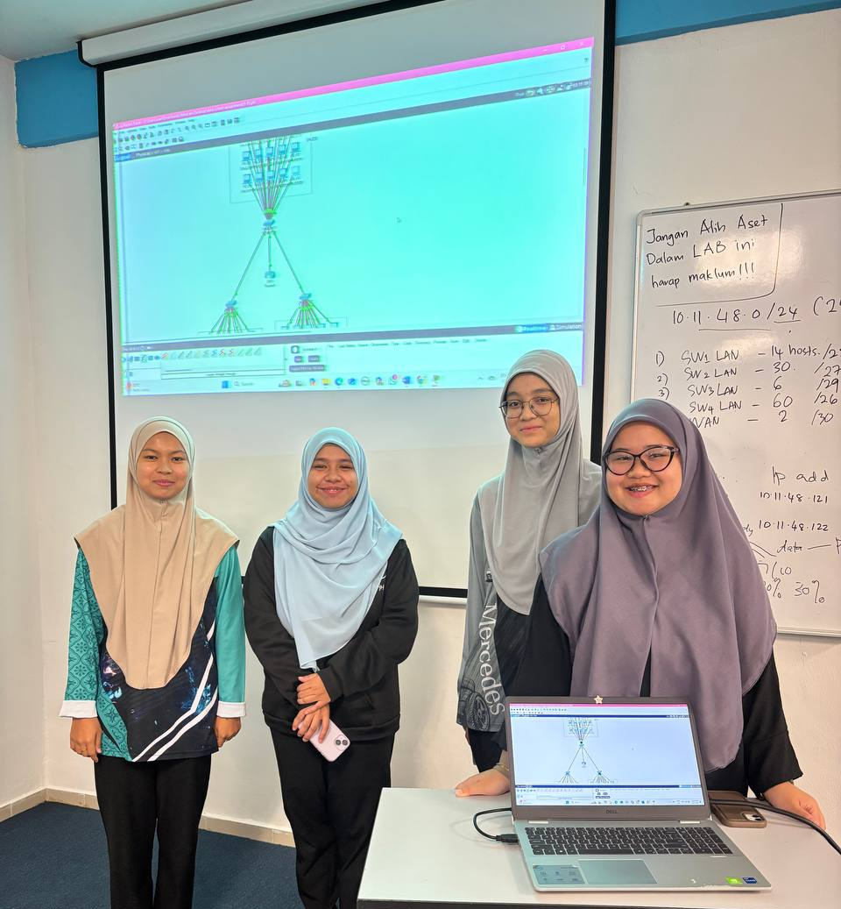
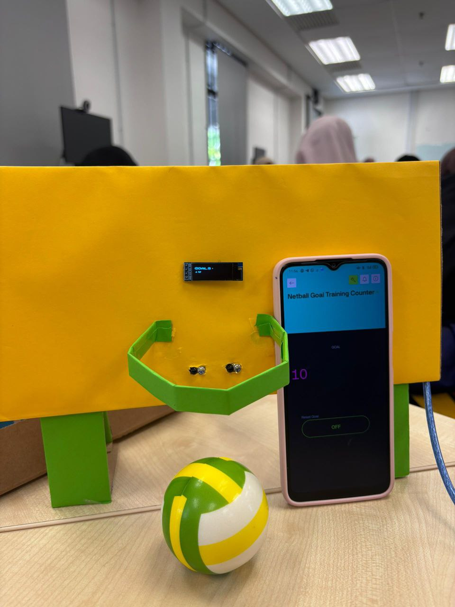

Academic projects and hands-on laboratory experiences related to networking, security and IoT.
An IoT-based final year project designed to enhance door security by integrating facial recognition and Time-Based One-Time Password authentication for secure access control.





Conducted forensic analysis involving memory, disk, and network artifacts to understand digital evidence acquisition and investigation processes.

Performed hands-on security exercises in controlled environments to gain practical exposure to common web vulnerabilities and security concepts.

Explored network behavior and configuration through simulation tools and packet analysis activities to strengthen networking fundamentals.

Developed a simple IoT-based system capable of automatically detecting and recording netball goals using sensors and microcontroller technology.